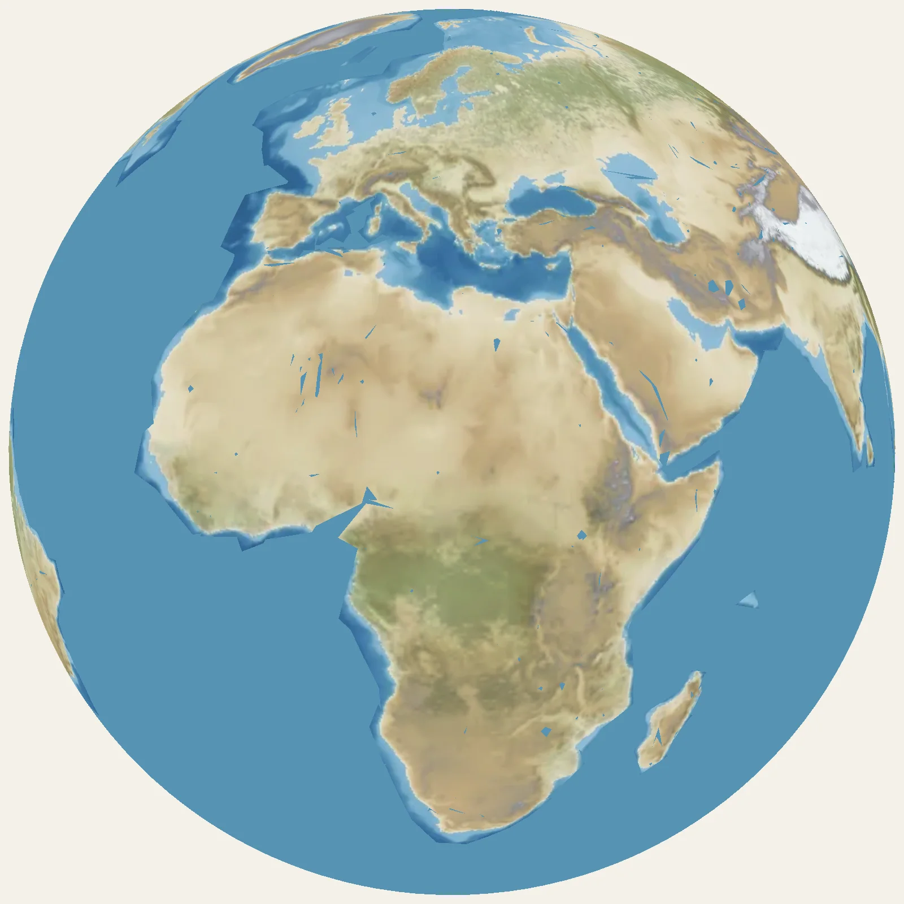

/
/
bench only: the Moon’s impact is a choice of two, and another guess gives both globes the same new guess

This one needs a newer device.
the 2D globe, as the Time Machine draws it
On the left, the Earth as a ball on the graphics card, the pieces of continent turned by their plates. On the right, the globe the Time Machine draws today. The same age, the same view: turn one and the other follows.
bench only: the Moon’s impact is a choice of two, and another guess gives both globes the same new guess

This one needs a newer device.
the 2D globe, as the Time Machine draws it